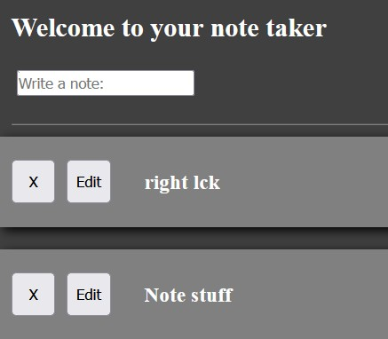
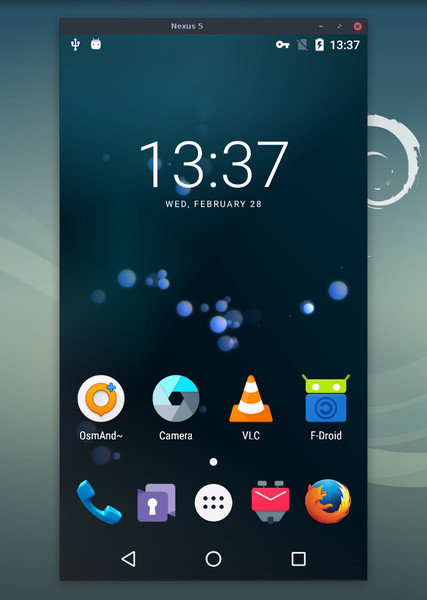
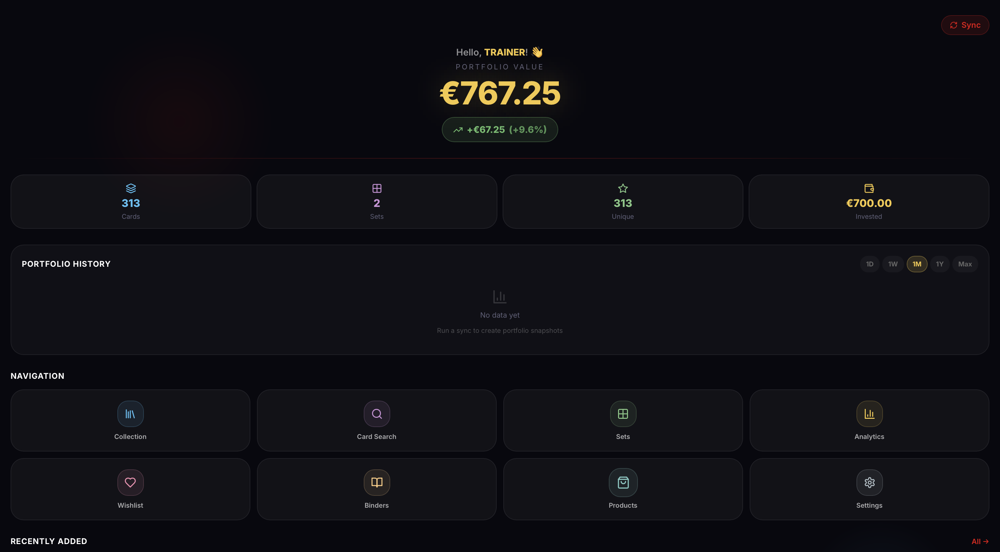
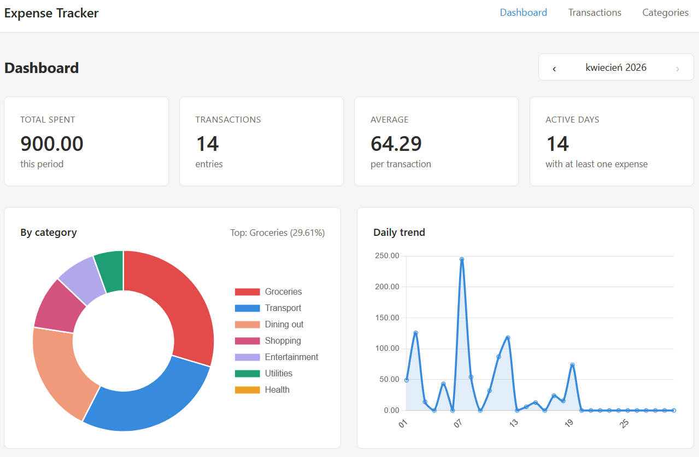
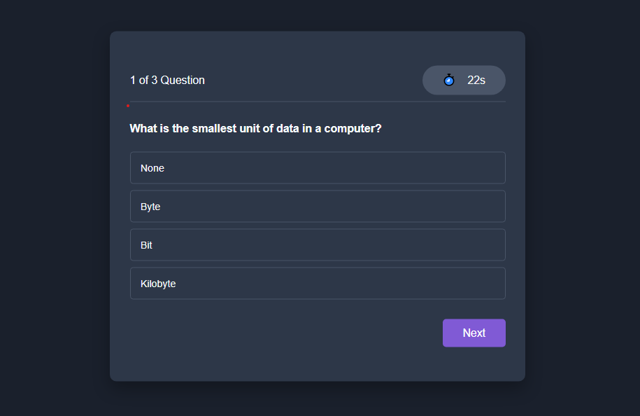

toDoList
Simple to do list for browser, where we can add new notes, delete or edit existing ones with the feature to automaticly all locally.
tech used: CSS and JavaScript
View projectA collection of my projects

Simple to do list for browser, where we can add new notes, delete or edit existing ones with the feature to automaticly all locally.
tech used: CSS and JavaScript
View project
This application mirrors Android devices (video and audio) connected via USB or TCP/IP and allows control using the computer's keyboard and mouse. It does not require root access or an app installed on the device. It works on Linux, Windows, and macOS.
tech used: C and Java
View project
A self-hosted Pokémon TCG collection manager to track cards, prices, binders, and portfolio analytics. Syncs free data from TCGdex, pulls Cardmarket/TCGPlayer prices, supports DE/EN variants, wishlists, sealed products, exports, backups, and optional AI card recognition - Docker-ready.
tech used: Python and Javascript
View project
Full-stack personal finance tracker — Flask REST API, Vue 3 dashboard, SQLite with SQL aggregations.
tech used: Vue, Pythone and Javascript
View project
The Quiz App is a simple, interactive multiple-choice quiz application built using HTML, CSS, and JavaScript. It features a start screen, a timer for each question, a dynamic quiz interface, and a score screen at the end. Users can answer randomized questions, get instant feedback (correct/incorrect states), and view their final score.
tech used: JavaScript, CSS and HTML
View project